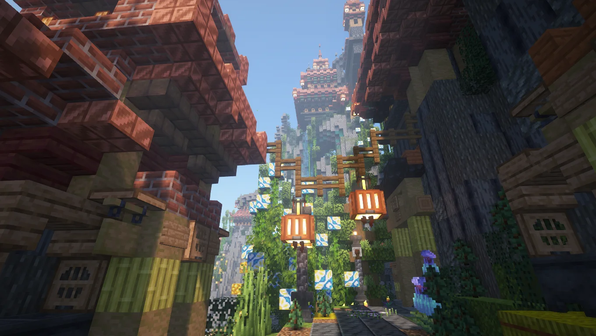
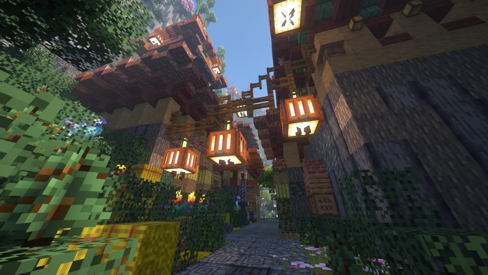
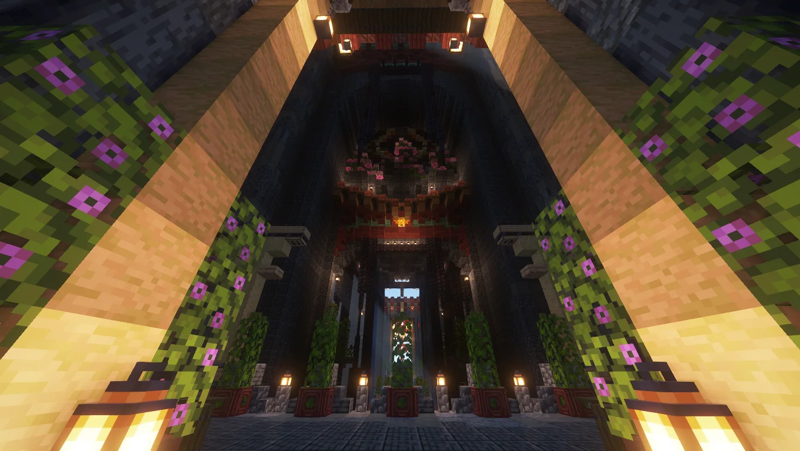
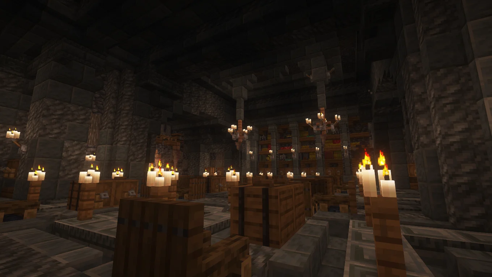
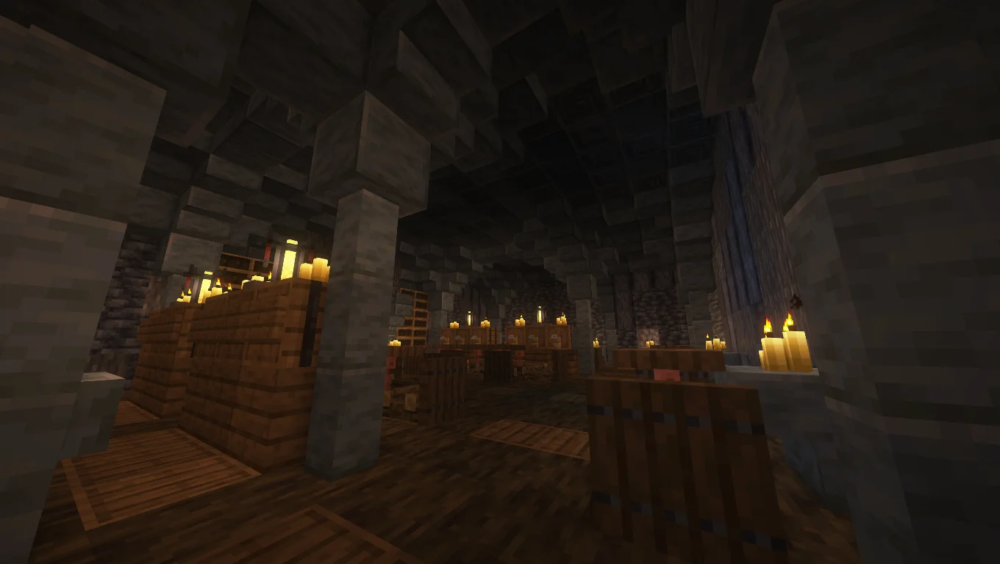

Gallery







- Year
- 2024
- Dimensions
- 501 × 501
- Style
- Fantasy East-Asian
- Type
- Personal project
- Role
- Architecture, interiors (partial), landscaping, organics
- Tools
- WorldEdit, VoxelSniper
- Server
- The Bakery
Project Overview
Yuanhua Pagoda is a monumental fantasy pagoda built in Minecraft on a 501×501 plot. The project brings together large-scale architectural massing with careful player-scale detailing, and treats the interior spaces as fully designed environments rather than backdrops. The build sits within landscaped grounds that frame the tower vertically and horizontally.
Monumental Pagoda Architecture
The exterior draws from East-Asian architectural traditions - layered rooflines, curved eaves, timber framing, and ornamental brackets. The tower is composed as a vertical hierarchy, with each level shifting subtly in proportion and detailing to keep the silhouette dynamic without breaking the language of the whole.
Interiors at Ceremonial and Intimate Scale
The interior program is a core focus of the project, though it was completed as a partial interior - the ceremonial spaces and several key intimate rooms are fully realised, while some of the remaining rooms are left as designed but unfinished spaces. Large ceremonial volumes are punctuated by smaller intimate rooms with hand-composed furnishings, lanterns, and decorative accents. Corridors and staircases connect the vertical program of the pagoda so that circulation itself becomes an experience.
Landscaping and Grounds
The pagoda sits within a landscaped garden environment with pathways, water features, and vegetation. The grounds provide both a formal approach to the tower and a series of quiet, player-scale spaces to explore around it. Terrain and landscaping were shaped with WorldEdit and refined with VoxelSniper.
Dragon Organic
A large-scale dragon organic anchors the project's mythological identity, integrated into the composition of the grounds rather than dropped in as an afterthought. It functions as both sculptural focal point and part of the architectural narrative.
Related Projects


Planning a Minecraft project?
If you're looking for large-scale architecture with fully finished interiors, I'd be glad to talk.
Discuss a Project